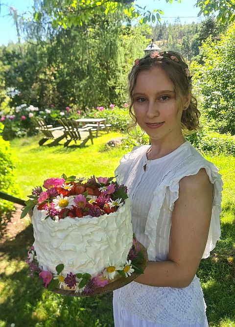

My Story - about the founder
Sourdough
I started baking sourdough during the pandemic and quickly fell in love with the process and the results. It was so easy and pandemic-friendly to get started as I didn't even have to go to the store. All I needed was flour, water and a bit of patience and time. And there was lots of time available. These days I don't bake as much as I did then, but I never stopped (although I took longer breaks). I try to always keep a starter alive so I can bake when I feel like it, but I would be lying if I didn't say I might have killed a starter or two... There was Barve, the original, Kevin, Bobb and now Kevin II (pronounced 'the second'). We'll see how long he lasts! Sourdoughs are alive and it's fun to see their different personalities - give it a try!
Cakes
I also bake a lot of cakes, maybe even more than I bake sourdough these days. It's just that each family member's birthday and all holidays needs to be commemorated with a unique cake! So that makes a lot of cakes. I really enjoy the process of planning my cakes from their flavour components to the design. It's both a creative and challenging architechtural endevour as I want a cake that tastes great, looks great and also stands up without collapsing. So for me it's not about the act of baking, but the act of creating. This is why you rarely see me make the exact same thing twice, although I often re-use tried and tested components like the actual cake, and fillings like lemon curd and frostings like my swiss meringue buttercream.
Contact me
I created this website to share my recipes and for others to learn from my experiments. If you have questions, please don't hesitate to contact me on my instagram.